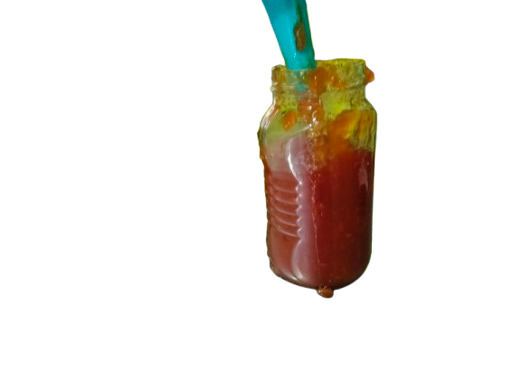
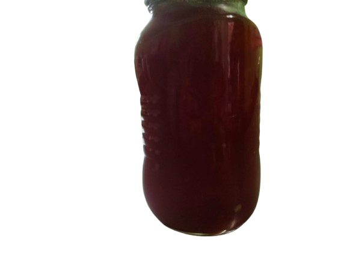
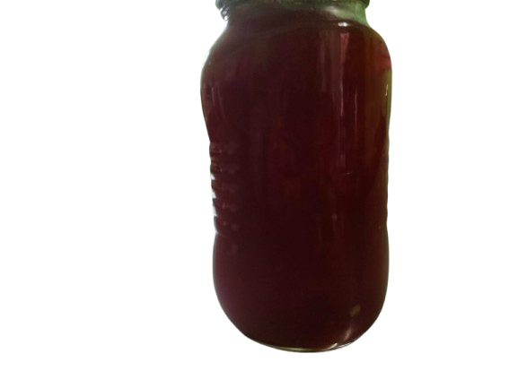
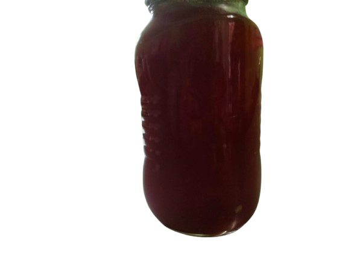
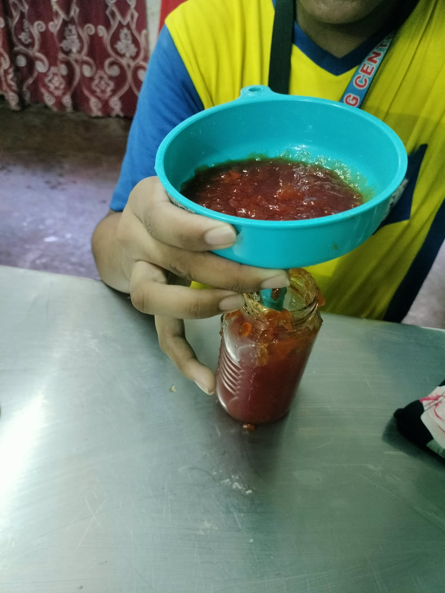
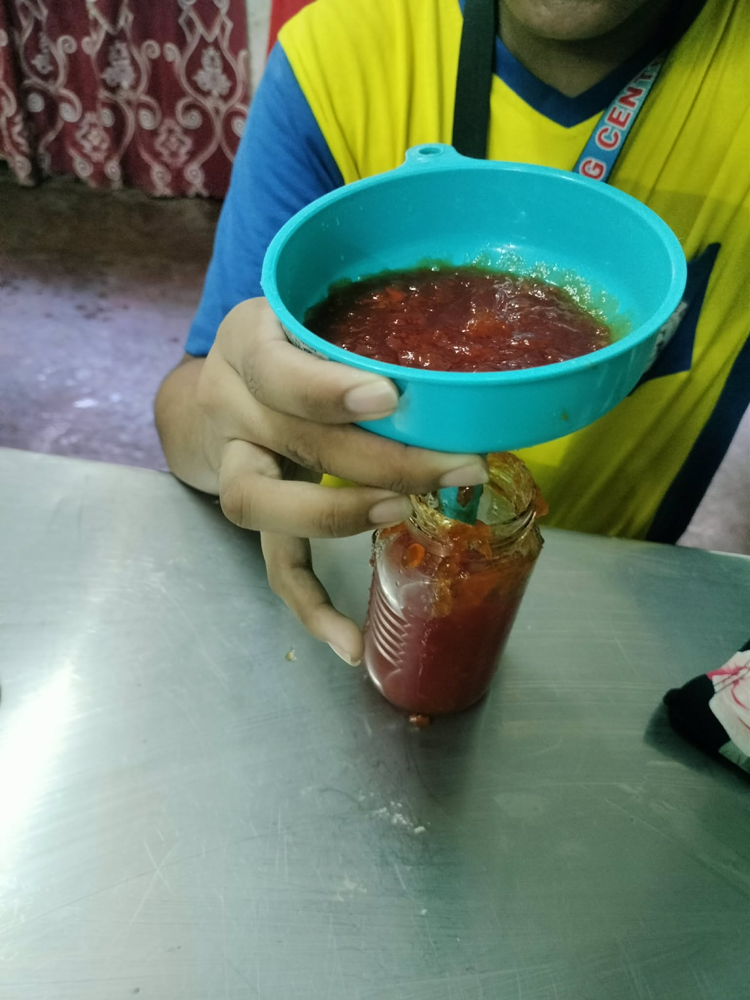
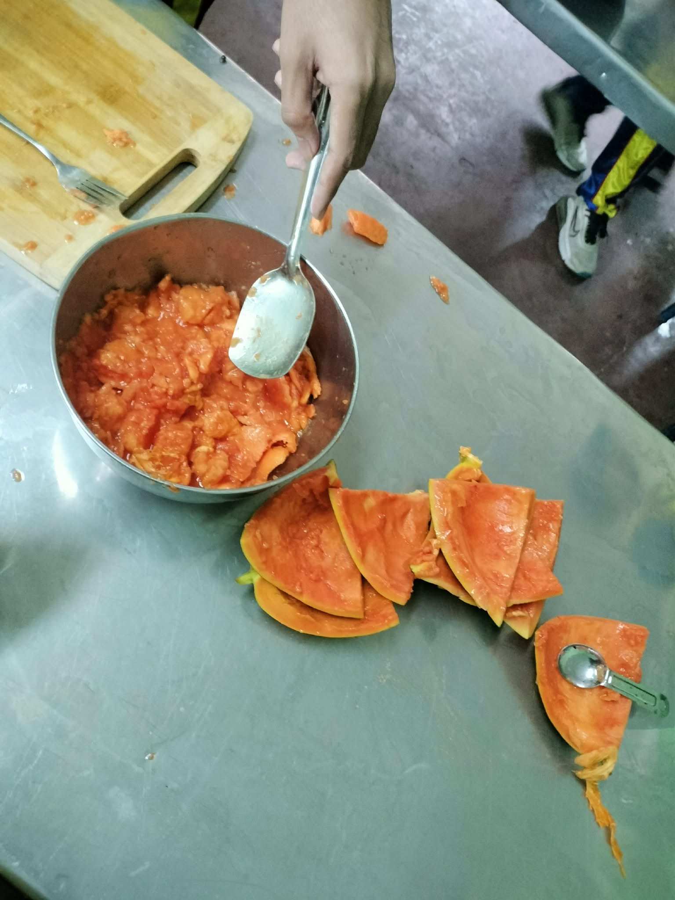
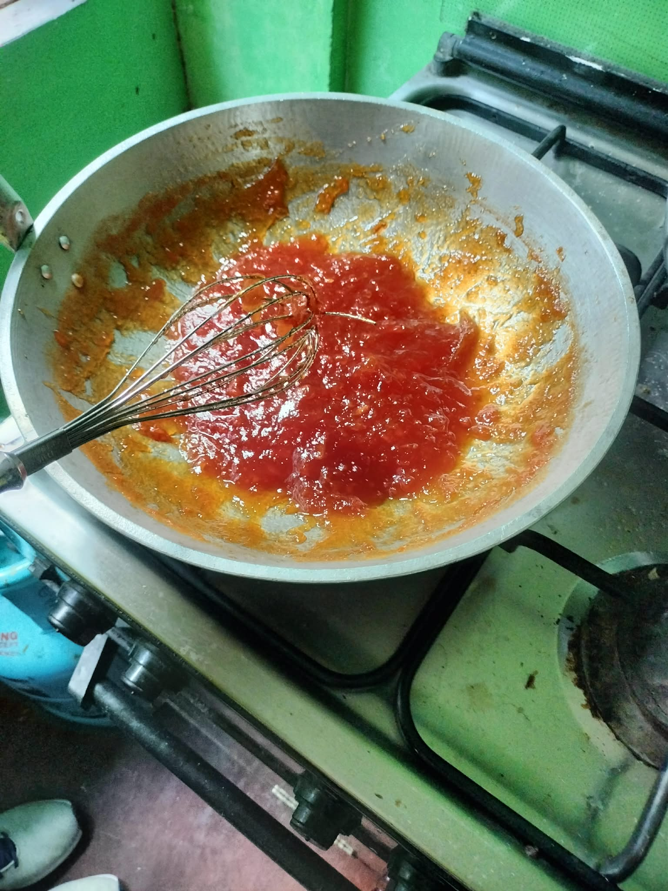
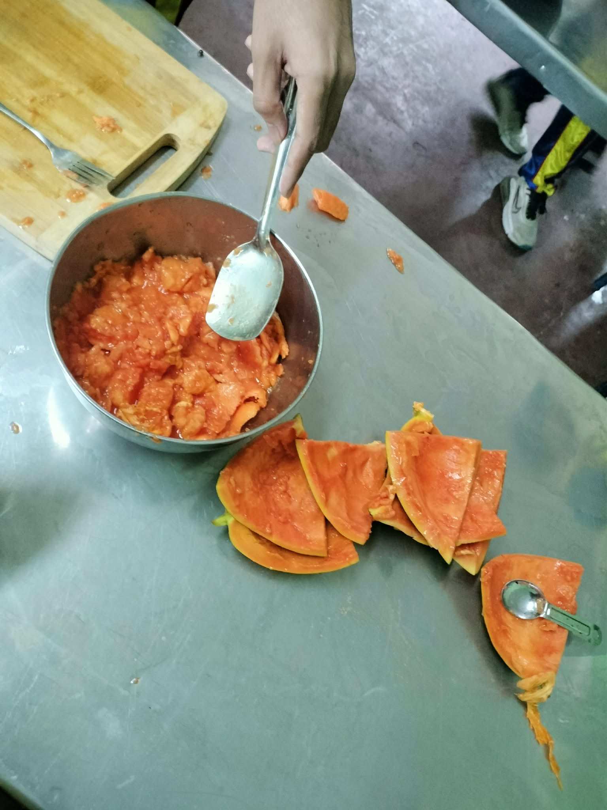
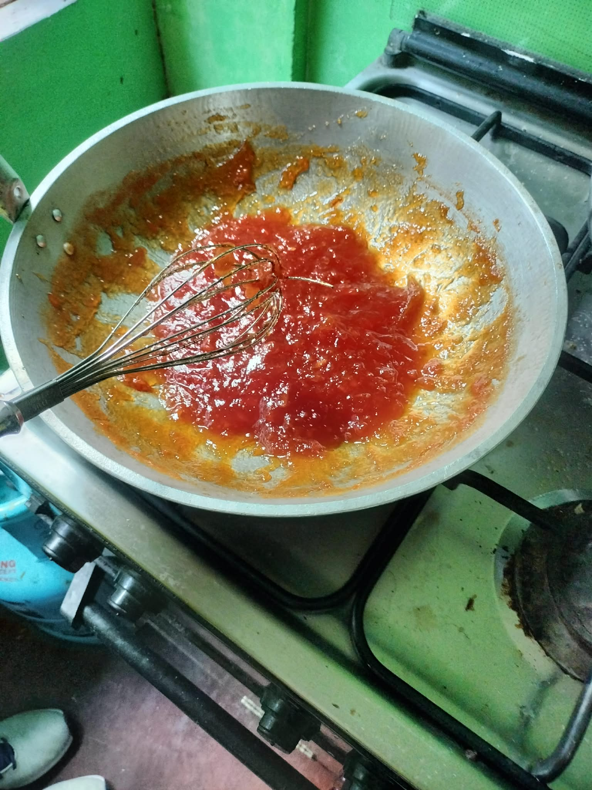

Welcome to Papaya Jam.com, your go-to destination for delicious and refreshing papaya jam! Our jam is made from the freshest papayas, carefully selected to ensure the highest quality and taste. Whether you're spreading it on toast, adding it to desserts, or using it as a topping for yogurt, our papaya jam is sure to delight your taste buds. Experience the sweet and tropical flavor of our homemade papaya jam today!
Ingredients:
1 ripe papaya 500g cup granulated sugar 1 lemon

 


 



 


